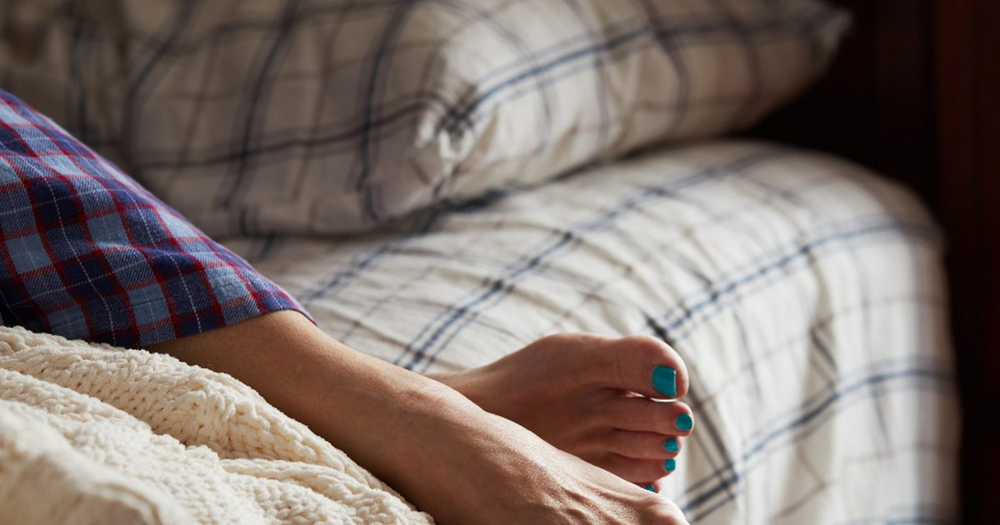

Habits & Recovery
Working Out When You're Exhausted: Do It or Skip It?
"Listen to your body" is true and useless, because a tired body says skip regardless of whether skipping is correct. Here is a rule you can actually apply.

The most common advice here is to listen to your body, which is not wrong and does not help. A tired body reliably says skip, whether or not skipping is the right call, and the whole difficulty is that you cannot tell from inside which situation you are in.
What follows is a rule that is applicable at seven in the evening when you do not want to think.
Why "listen to your body" fails
Three reasons.
Tiredness is not specific. The feeling produced by needing recovery is largely indistinguishable from the feeling produced by a stressful day, poor sleep, low mood, or simply not fancying it. They warrant different responses and feel the same.
The signal is loudest when the decision is worst. Precisely when you are least able to judge, the pull toward skipping is strongest.
It is unfalsifiable. Any decision can be justified after the fact as having listened. That makes it useless as a rule.
Two kinds of tired
The distinction that makes the decision tractable.
Systemic fatigue is the accumulated kind: poor sleep over several nights, illness coming on, a genuinely demanding training block, a period of high stress. It affects everything — you feel it walking upstairs, not just at the thought of training. It generally warrants reduced training or rest.
Situational tiredness is a bad day. A difficult meeting, a late night, mental fatigue from concentrating. It feels similar and it is largely psychological, and training frequently makes it better rather than worse.
The useful thing about this distinction is that it is checkable rather than felt, which is what makes the rule below work.
The decision rule
Three questions and a default. Answer honestly and follow the result rather than reconsidering.
Question 1: Have you slept under six hours for two or more consecutive nights? If yes, train at reduced difficulty or skip. Sleep restriction measurably impairs performance and recovery,1 and training hard on an accumulated deficit buys fatigue rather than adaptation.
Question 2: Do you feel unwell, as distinct from tired? Sore throat, fever, aching beyond ordinary muscle soreness, swollen glands. If yes, skip — and see the caution below.
Question 3: Is your resting state noticeably off? Unusually elevated heart rate, feeling shaky, no appetite. If yes, reduce or skip.
If all three are no, do the session at reduced difficulty. Not the full session and not nothing. That is the default and it is right far more often than either extreme.
The reason for the default is that situational tiredness is much more common than systemic fatigue, and a reduced session on a bad day preserves the routine, produces real training, and frequently feels better than expected once started.
The default is not train or skip. It is train, smaller. That answer is right more often than either of the other two.
What a reduced session looks like
Defined in advance, so it is not a judgement call while tired.
- Half the sets. Three becomes two, four becomes two.
- Stop four or five reps short of failure on everything, rather than taking the last set close.
- Drop one variation. Floor push-ups become step push-ups.
- Keep the first three exercises, cut the rest. The ordering exists for exactly this — see how to structure a home workout.
- Skip conditioning entirely. It is the most fatiguing element and the least essential on a bad day.
That is ten to fifteen minutes and it is a genuine session. Weekly volume drives adaptation,2 so a reduced session contributes real volume rather than being a token gesture.
It also preserves the cue and the routine, which is worth more than the training itself on that particular evening — the mechanism is in habit stacking for exercise.
When to genuinely skip
Skip if you have a fever, chest symptoms, or feel systemically unwell rather than tired. General guidance often distinguishes symptoms above the neck, where gentle activity is usually reasonable, from fever or chest involvement, where rest is appropriate. Training through a febrile illness is the specific scenario in which cardiac complications such as myocarditis become a concern — uncommon, but serious. If you have been ill, return gradually, and see a doctor before resuming after anything involving fever or the chest.
Also skip, without guilt, if you are injured in a way training would aggravate; if you have had a genuinely exceptional day and the alternative is going to bed an hour earlier; or if this is the first missed session in weeks.
A single missed session does not materially affect habit formation.3 The rule that matters is not missing twice in a row — so if you skip today, protect tomorrow even if it becomes ten minutes.
If it is happening every week
One tired evening is normal. Feeling this way before most sessions is information, and the answer is not more discipline.
Check sleep first. It is the most common cause and the least investigated — see sleep and strength.
Then check the training load. Persistent pre-session fatigue, declining performance and lingering soreness together suggest volume has outrun recovery, which is the case for a lighter week — see deload weeks for home training.
Then check the schedule. If sessions are placed at a time when you are reliably exhausted, the slot is wrong rather than you. A lunch break or a morning may be considerably more viable — see morning vs evening workouts.
Then reduce the plan. Three sessions completed beats five attempted. Two a week still meets the adult recommendation for muscle-strengthening activity.4
And if fatigue is persistent, disproportionate and not explained by sleep or training, that is worth raising with a doctor. Ongoing exhaustion has a long list of medical causes and none of them are addressed by a better training split.
Where to go next
For the wider recovery picture, see recovery for busy people. For keeping the routine intact through bad weeks, see how to actually stick to a home workout habit.
Frequently asked questions
Should I work out when I am tired?
Usually yes, at reduced difficulty. Situational tiredness from a bad day is far more common than genuine systemic fatigue, and a shortened session preserves the routine while still producing real training. Skip only if you are unwell, feverish, or have slept badly for several consecutive nights.
How do I know if I am too tired to train?
Three checks: have you slept under six hours for two or more consecutive nights, do you feel unwell rather than tired, and is your resting state noticeably off. If all three are no, do a reduced session rather than skipping.
What is a reduced workout?
Half the sets, stopping four or five repetitions short of failure, one easier variation, keeping only the first three exercises, and skipping conditioning entirely. That is ten to fifteen minutes and it contributes real weekly volume.
Should I exercise when ill?
Not with a fever, chest symptoms, or if you feel systemically unwell. Guidance often distinguishes symptoms above the neck, where gentle activity is usually reasonable, from fever or chest involvement, where rest is appropriate. See a doctor before resuming after anything febrile.
Why am I always too tired to work out?
Check sleep first, then whether training volume has outrun recovery, then whether the session is scheduled at a time you are reliably exhausted. If fatigue is persistent and unexplained by any of those, it is worth raising with a doctor.
Does skipping one workout matter?
Very little. A single missed session does not materially affect habit formation. What matters is not missing twice in a row, so if you skip today, protect tomorrow even if it becomes a ten-minute version.
Sources and further reading
- Bonnar D, Bartel K, Kakoschke N, Lang C. “Sleep Interventions Designed to Improve Athletic Performance and Recovery: A Systematic Review of Current Approaches.” Sports Medicine, 2018;48(3):683–703. PubMed.
- Schoenfeld BJ, Ogborn D, Krieger JW. “Dose-response relationship between weekly resistance training volume and increases in muscle mass: A systematic review and meta-analysis.” Journal of Sports Sciences, 2017;35(11):1073–1082. PubMed.
- Lally P, van Jaarsveld CHM, Potts HWW, Wardle J. “How are habits formed: Modelling habit formation in the real world.” European Journal of Social Psychology, 2010;40(6):998–1009. doi:10.1002/ejsp.674.
- World Health Organization. WHO Guidelines on Physical Activity and Sedentary Behaviour. 2020.
Comments
Comments are not enabled yet. Add a hosted comment embed (Disqus, Commento, Giscus) inside this container when you are ready.